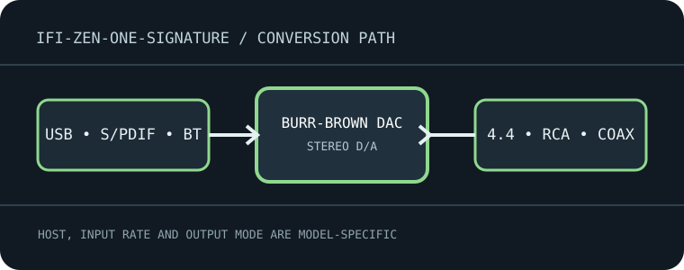

[ INDIVIDUAL MODEL // SOUND HARDWARE ]
iFi ZEN One Signature
Desktop digital hub and DAC with USB, optical/coaxial S/PDIF and Bluetooth input; balanced/unbalanced line outputs, no headphone amplifier.

Model-specific specifications
| Exact model / architecture | Burr-Brown True Native DAC architecture with 16-core XMOS USB processing; fixed-level converter, not a headphone amp or recording ADC. |
|---|---|
| Digital inputs / interface | USB-B (USB 2.0 compatible), optical TOSLINK, coaxial S/PDIF and Bluetooth 5.1 receiver. Bluetooth codecs include LDAC, LHDC, aptX-family, AAC and SBC depending on source. |
| Analog / digital outputs | Balanced 4.4 mm line output and stereo RCA line output; coaxial digital output is available in the documented routing modes. The 4.4 mm connector is line-level, not a headphone jack. |
| Supported formats and rates | USB: PCM/DXD through 384 kHz, DSD through DSD256 and MQA decoding as documented by iFi. S/PDIF limits are source/input dependent; Bluetooth is codec-limited (up to 96 kHz high-resolution codecs), not equivalent to USB PCM. |
| Power | External 5 V DC supply, center-positive; use the specified adapter and polarity. USB is a signal input and does not replace the required DC supply. |
| Drivers / host compatibility | USB audio works with computer audio hosts; Windows may require the iFi USB driver for high-rate/ASIO modes, while macOS/Linux host support is mode-dependent. Use the official driver/download hub for the OS and hardware revision. |
| Compatibility caveats | No headphone amplifier, analog input, volume control or microphone functionality. Route the 4.4 mm balanced output only to compatible balanced line inputs; do not use it as a headphone output. |
Compatibility & preservation
No headphone amplifier, analog input, volume control or microphone functionality. Route the 4.4 mm balanced output only to compatible balanced line inputs; do not use it as a headphone output.
- Record the exact product name, hardware revision, serial range, included power supply, firmware and driver version before service.
- Match digital sample format/rate to the selected physical input and host mode; set downstream amplifier level safely before playback.
- Keep the model-specific manufacturer manual with the device; connector shape alone does not guarantee electrical or protocol compatibility.
Manufacturer sources
- ZEN One Signature manufacturer product specificationsManufacturer product documentation for the exact model and its revision-specific operation/specifications.
- Official ZEN One Signature manual (PDF)Manufacturer product documentation for the exact model and its revision-specific operation/specifications.